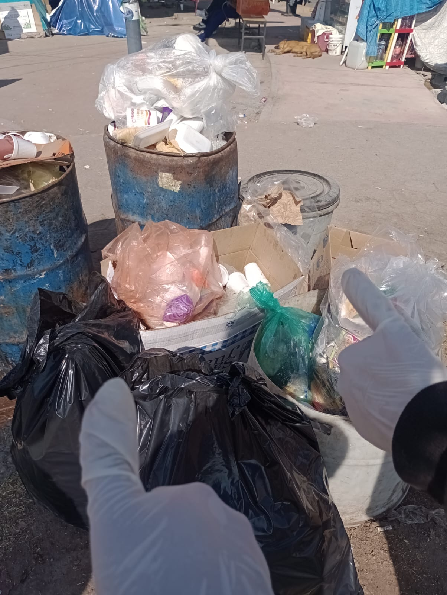
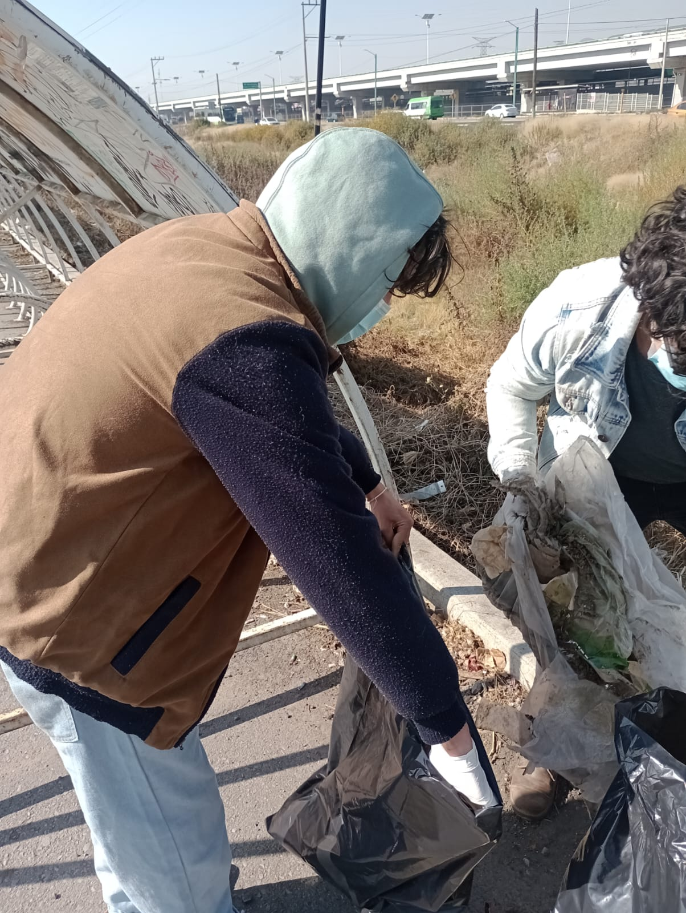
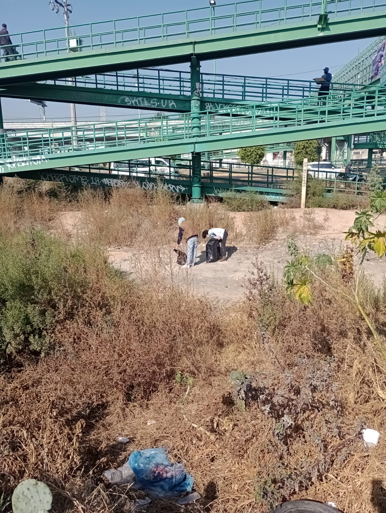

El pasado 4 de enero de este año, llevamos a cabo nuestra primera recolecta de basura y limpieza de lugares públicos, marcando un hito importante en nuestro compromiso con el medio ambiente y la comunidad.
Continuar leyendo...El pasado 4 de enero de este año, llevamos a cabo nuestra primera recolecta de basura y limpieza de lugares públicos, marcando un hito importante en nuestro compromiso con el medio ambiente y la comunidad.
Continuar leyendo...